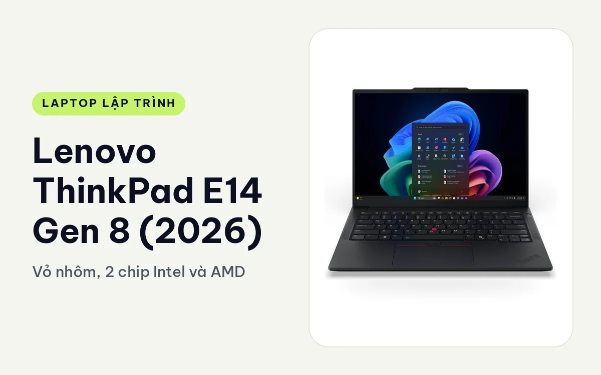
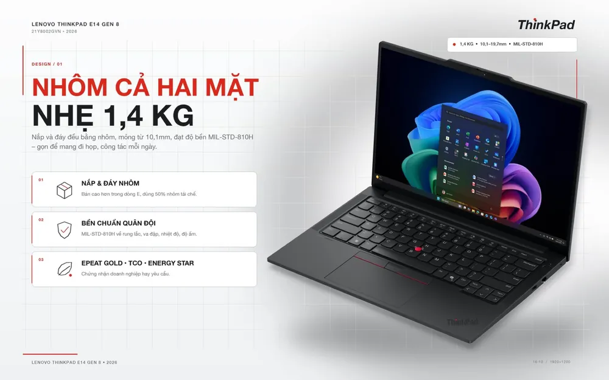
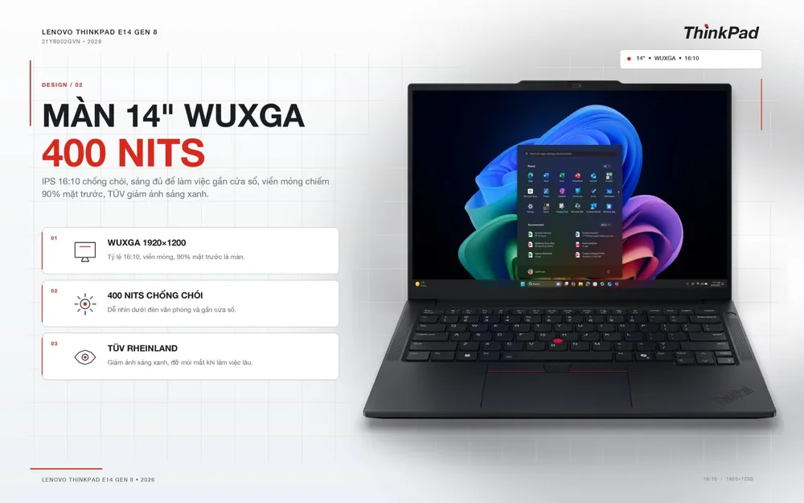
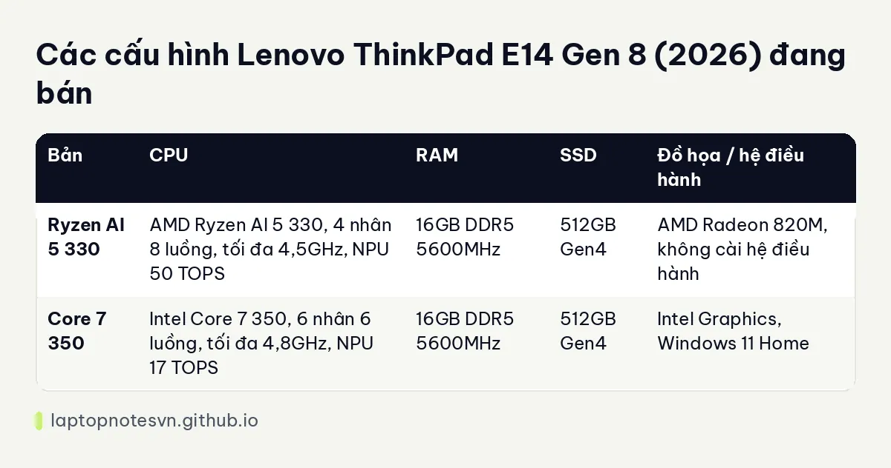

Lenovo ThinkPad E14 Gen 8 (2026) cho lập trình - Vỏ nhôm, 2 chip Intel và AMD

Lenovo ThinkPad E14 Gen 8 (2026) là ThinkPad bậc phổ thông, giá mềm hơn dòng T và X1. Máy đáng nhìn ở phần vỏ nhôm, bàn phím ThinkPad và chuyện có hai bản dùng hai hãng chip khác nhau, mỗi bản hợp một kiểu người code.
Điều cần nói thẳng ngay đầu bài: cả hai bản đều chỉ 16GB RAM và chip tiết kiệm điện, nên máy hợp học tập và code nhẹ hơn là build nặng. Chọn đúng bản sẽ quan trọng hơn mọi thông số khác.
Thiết kế
Bản Intel 21Y8002GVN dùng nhôm cho cả nắp màn hình lẫn mặt đáy, màu đen, kích thước 313 x 220,3 mm, dày từ 10,1 mm ở cạnh trước đến tối đa 19,7 mm. Bản AMD dùng chung thân máy, tùy cấu hình có đáy nhôm hoặc đáy nhựa PC-ABS. Máy đạt chuẩn MIL-STD-810H, nắp dùng 50% nhôm tái chế.

Bàn phím 6 hàng chống tràn nước, hành trình phím 1,5 mm, kèm TrackPoint đỏ và touchpad 60 x 115 mm có ba nút vật lý. Cảm giác gõ nảy và đều tay, đây là thế mạnh chung của ThinkPad ở mọi tầm giá. Bản Intel có đèn nền bàn phím.
Màn hình ở hai bản là IPS 14 inch WUXGA 1920 x 1200, tỉ lệ 16:10, 400 nits, chống chói, phủ 45% NTSC. Màu hơi nhạt, hợp văn bản và code hơn là chỉnh ảnh.
Mang đi hằng ngày
Bản AMD nặng từ 1,34 kg, bản Intel khoảng 1,4 kg. Cả hai đều mang đi học, đi làm thoải mái. Củ sạc 65W qua cổng USB-C nên dùng chung được với điện thoại và máy tính bảng, một lợi thế nhỏ nhưng tiện khi đi nhiều.

Bản Intel dùng pin 48Wh, sạc được 50% trong 30 phút khi tắt máy hoặc để ngủ. Bản AMD có tùy chọn pin 48Wh hoặc 64Wh. Hãng ghi tới khoảng 15 giờ ở bài MobileMark 30 với pin 64Wh, còn pin 48Wh thì ngắn hơn nhưng vẫn đủ một ngày làm việc nhẹ.
Cổng kết nối khác nhau theo bản. Bản Intel có 2 cổng Thunderbolt 4, HDMI 2.1, một USB-A 10Gbps, một USB-A 5Gbps, cổng mạng Gigabit và jack 3,5 mm. Bản AMD thay Thunderbolt 4 bằng 2 cổng USB4 40Gbps, vẫn giữ USB-A, LAN và jack. Cả hai dùng Wi-Fi 7.
Có mấy cấu hình
Có 2 cấu hình, cùng RAM 16GB DDR5 5600MHz, SSD 512GB Gen4, màn WUXGA. Khác biệt nằm ở chip, đồ họa, hệ điều hành và khả năng nâng cấp.

| Bản | CPU | RAM | SSD | Đồ họa / hệ điều hành |
|---|---|---|---|---|
| Ryzen AI 5 330 | AMD Ryzen AI 5 330, 4 nhân 8 luồng, tối đa 4,5GHz, NPU 50 TOPS | 16GB DDR5 5600MHz | 512GB Gen4 | AMD Radeon 820M, không cài hệ điều hành |
| Core 7 350 | Intel Core 7 350, 6 nhân 6 luồng, tối đa 4,8GHz, NPU 17 TOPS | 16GB DDR5 5600MHz | 512GB Gen4 | Intel Graphics, Windows 11 Home |
Bản AMD Ryzen AI 5 330
Điểm hay của bản này là phần cứng mở. Máy có 2 khe RAM SO-DIMM DDR5-5600, hỗ trợ kênh đôi, nâng tối đa 64GB, và 2 khe SSD. Gắn thêm một thanh nữa là đồ họa tích hợp nhanh lên rõ, còn dung lượng thì đủ cho Docker và máy ảo nhẹ.
Máy giao không có hệ điều hành, hợp người tự cài Linux hoặc Windows bản quyền riêng. Chip chỉ 4 nhân 8 luồng nên hãy kỳ vọng ở mức web, script, học code, chứ không phải build C++ lớn.
Bản Intel Core 7 350
Bản Intel có 6 nhân và cổng Thunderbolt 4, tiện khi cắm dock hoặc màn hình ngoài. Đi kèm Windows 11 Home, camera IR và vân tay, nên dùng được ngay cho học tập, làm việc văn phòng kiêm code.
Hạn chế nằm ở bộ nhớ: máy chỉ có 1 khe RAM SO-DIMM, đang gắn thanh 16GB, nâng tối đa 32GB bằng cách thay thanh 32GB, và RAM chạy kênh đơn. SSD cũng chỉ có 1 khe M.2. Anh chị code web, học lập trình thì thế là đủ, còn nhiều container thì sẽ chật.
Nên chọn bản nào
Nếu cần đường nâng cấp, chọn bản AMD. Nếu cần Thunderbolt 4, cài sẵn Windows và camera IR, chọn bản Intel. Cả hai đều chưa phải máy cho build nặng, theo mô tả sản phẩm, ai thường biên dịch dự án lớn nên chọn cấu hình mạnh hơn.
Một lưu ý khi cân giữa hai bản: bản AMD gọn gàng hơn về giá trị nâng cấp, còn bản Intel gọn gàng hơn về tính sẵn sàng dùng ngay. Người mua để học thường thích bản có sẵn Windows, còn dân đã quen Linux hay tự dựng môi trường thích bản trống hệ điều hành để cài theo ý mình, đỡ mất công xóa đi làm lại.
Xem thêm ThinkPad T14 Gen 7 cho lập trình để hiểu bước nâng lên, và lập trình viên cần bao nhiêu RAM để quyết định có cần mua thêm thanh RAM hay không.
Đăng ngày 08/11/2026